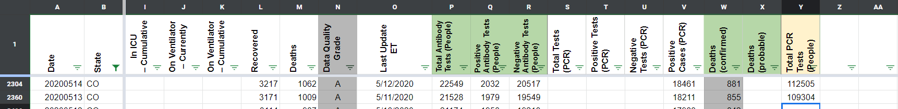
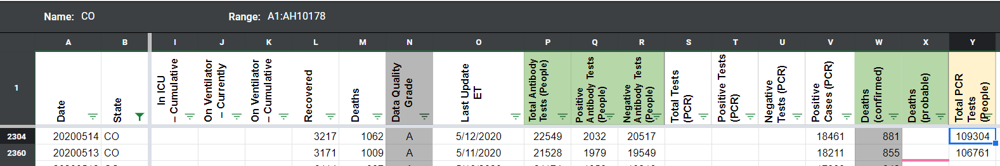

[CO] Updating historicals for Total PCR Tests (People)
State or US: CO
Describe the problem Updating historical values for “Total PCR Tests (People)” for CO prior to implementation of this column. Historicals updated from 3/17 to 5/14, using the screenshot captured at 6 - 7 pm the previous day. Unfortunately due to lack of screenshots, gaps will exist on 3/27, 4/9 and 5/18.
Link to data source https://covidtracking.com/data/state/colorado#historical
Comments
qpmnguyen commented on June 25, 2020 at 9:55 am
After screenshots for 5/14 and 5/13 
qpmnguyen commented on June 26, 2020 at 10:22 am
All CO data has been backfilled up till March 16th. Some gaps due to missing relevant screenshots.
Before screenshots for 5/14 and 5/13 